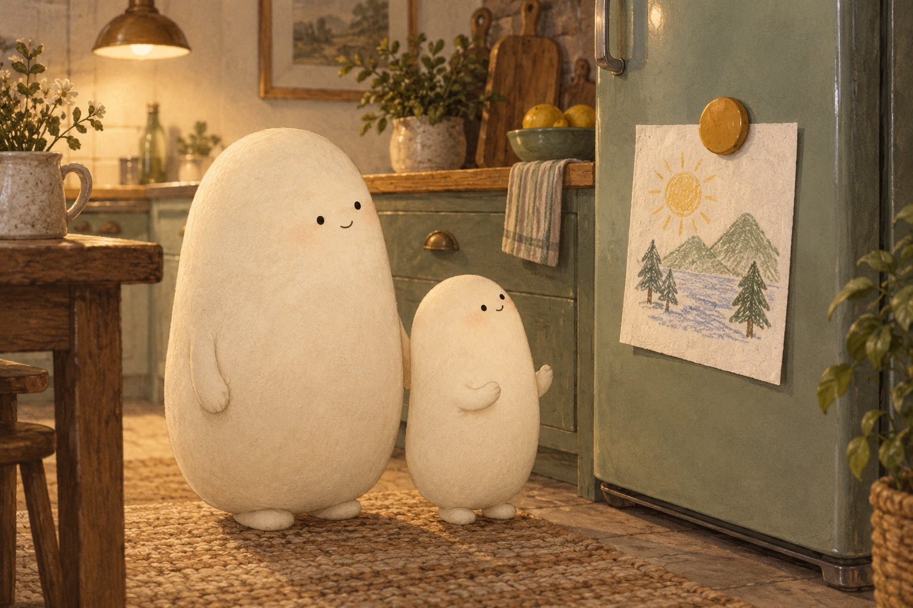

01What holds a magnet to the fridge?

Look closer. Look at the magnet holding the paper drawing.
A little explanation. The magnet and the steel in this fridge door pull toward each other. The pull helps the magnet stay put. It can act through a thin piece of paper; the paper does not have to be magnetic.
Try this. Point to the magnet, the paper, and the steel door. Tell which two pull toward each other.